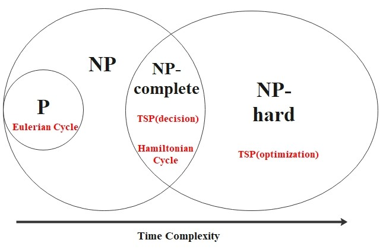

Polynomial Verifiability
Hamiltonian cycle problem has a feature called polynomial verifiability.
Even though we cannot determine the existence of the path in polynomial time(it require exponential time in the worst case),
if such a cycle is given, we could easily verify its existence. Here, we introduce a formal definition:
Verifiability:
A verifier for a language \(A\) is an algorithm \(V\), where
\[
A = \{w \, | V \text{ accepts } \langle w, c \rangle \text{ for some string } c \}.
\]
We measure the time of a verifier only in terms of the length of \(w\), so a polynomial time verifier runs
in polynomial time in the length of \(w\). A language \(A\) is polynomially verifiable if
it has a polynomial time verifier. The string \(c\) is called a certificate of membership in \(A\).
(In the context of the Hamiltonian cycle problem, the certificate can be a specific Hamiltonian cycle.)
Nondeterministic Polynomial Time (NP)
Class NP:
NP is the class of languages that have polynomial time verifiers.
There is a nondeterministic Turing machine (NTM) that decides the Hamiltonian cycle problem
in nondeterministic polynomial time. In general, a language is in NP if and only if it is
decided by some nondeterministic polynomial time Turing machine. (A polynomial time verifier == some NTM)
Also, we define the nondeterministic time complexity class as following:
Nondeterministic Time Complexity Class:
\[
\text{NTIME}(t(n)) = \{L | \text{ L is a language decided by an } O(t(n)) \text{ time nondeterministic Turing machine.}\}
\]
Moreover,
\[
NP = \bigcup_k \text{ NTIME }(n^k).
\]
NP-Completeness
It is known that the Hamiltonian cycle problem is said to be NP-complete.
(Proofs might be updated in the future.)
NP-Completeness:
A language \(B\) is
NP-complete if it satisfies following conditions:
- \(B\) is in NP.
- Every \(A\) in NP is polynomial time reducible to \(B\).
Polynomial Time Reduction:
Language \(A\) is polynomial time reducible to language \(B\), denoted
\[
A \leq_{P} B
\]
if a polynomial time computable function \(f: \Sigma^* \to \Sigma^*\) exists, where
\[
\forall w, \, w \in A \Longleftrightarrow f(w) \in B.
\]
The function \(f\) is called the polynomial time reduction of \(A\) to \(B\).
Note: If \(f\) is a polynomial time computable function, there exists a polynomial time Turing machine \(M\) that halts
with \(f(w)\) in its tape, when started on any input (w).
Finally, we introduce the Hamiltonian cycle problem with weighted edges.
Traveling Salesperson Problem (TSP), ver. Decision
Given a set of cities, distances between them, and a number \(k\), is there a tour that visits each
city exactly once, returns to the starting city, and has total distance \(\leq k\)?
This decision version problem is NP-complete, but the optimization version - which asks for the shortest
possible Hamiltonian cycle given edge weights - is NOT NP-complete, and it is considered as NP-hard.
Assume that \(P \neq NP\), then we have the following diagram about time complexity classes.

Note: If \(P = NP\), then \(P = NP = NP\text{-complete}\).